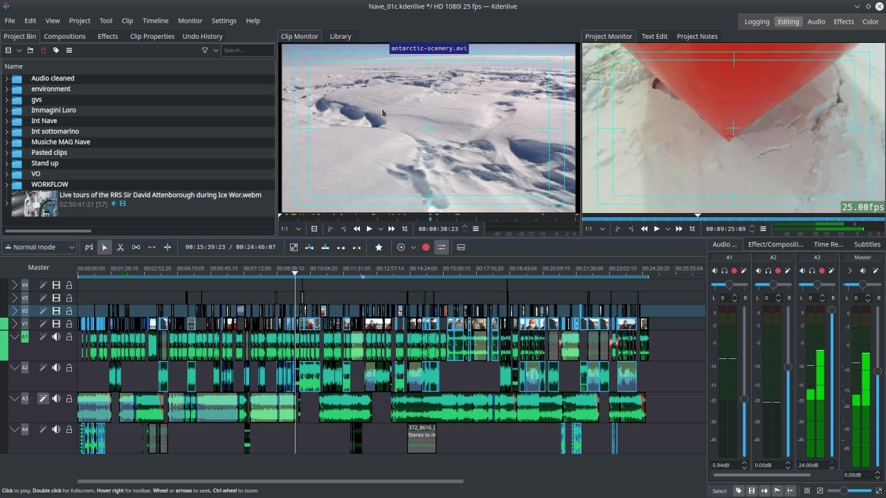

Our Services

Web Development
web development is the process of crafting all the information your website offers. it can involve everything from research and analysis to the creative design , organizing and publishing the resulting content on the site

Video Editing
video editor is tasked with taking the row footage shot by a film crew and director and turning into the final product. following an outline script or shot list and assembling the footage into one cohesive video or film